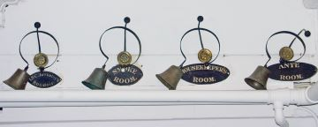
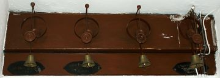

Towneley from A to Z

Towneley from A to Z
Some of the bells used to call servants to the rooms of their masters still survive, one set is in the passageway by the Kitchen and another set is above the doorway from the Long Gallery to the Priest's Hide.
Lady C.Towneley's Boudoir, Smoke room, Housekeeer's room, Ante room.
Yellow Room, Blue Dressing Room, --- and Chintz Dressing Room.